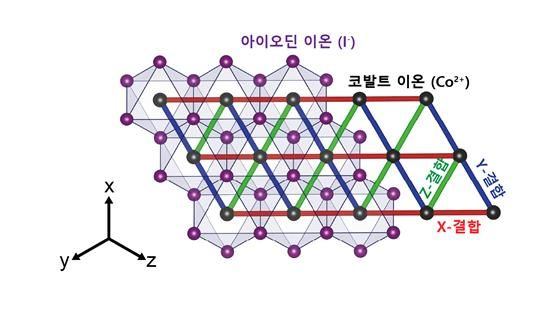

韓연구진, 세계 최초 삼각격자 구조 물질로 양자 발견…"양자컴 분야 선도적 연구성과"
[서울=뉴시스]윤정민 기자 = 세계 연구진들은 양자컴퓨터를 오류 없이 구현하기 위해 지난 20~30년간 벌집 구조(허니콤) 물질에서만 나타나는 양자 현상을 연구해 왔다. 하지만 국내 연구진이 세계 최초로 벌집 구조가 아닌 2차원 삼각격자 구조를 지닌 물질에서도 오류 없는 양자컴퓨터를 구현할 양자 상태를 발견했다.
과학기술정보통신부는 박제근 서울대 교수 연구팀과 김성진 이화여대 교수 연구팀이 삼각격자 구조 자성 반데르발스 물질에서 새로운 양자 상태 발견에 세계 최초로 성공했다고 29일 밝혔다. 과기정통부 기초연구사업(리더연구) 지원으로 수행한 이번 연구 성과는 국제학술지 '네이처 피직스'에 게재됐다.
키타에프 모델은 벌집 구조를 가지는 물질에서 나타나는 양자 현상으로 오류가 없는 양자컴퓨터를 구현할 수 있는 양자 상태를 지닌다.
그동안 국내·외 연구자들은 벌집 구조 물질을 이용해 키타에프 모델을 구현하는 데 그쳤다. 벌집 구조가 아닌 삼각격자 구조를 가진 물질이 양자상태를 가질 경우 다양한 양자 현상이 나올 수 있다는 것은 이론적으로만 알려져 있을 뿐 실제 물질에서 구현된 적은 없었다.
연구팀은 자성 물질을 연구하던 중 기존에 사용하고 있던 물질 니켈(Ni)을 코발트(Co)로 치환할 경우 키타에프 모델이 구현되는 여러 가지 조건을 만족한다는 것을 알게 됐다.
연구팀이 사용한 아이오딘화 코발트(CoI2)는 약 40년 전에 합성이 가능하다는 것이 밝혀졌지만 수분에 취약해 이에 관련한 연구는 많지 않아 이 물질을 사용하는 데 어려움이 있었다.
하지만 연구팀은 자성물질 연구를 지속해 왔기 때문에 이 물질을 보다 안정적인 상태에서 분석하는 것이 가능했다고 설명했다.
연구팀은 이론적으로 밝혀낸 것을 실험적으로 증명하기 위해 일본 양성자 가속기 연구단지(J-PARC) 중성자 시설에서 비탄성 중성자 산란실험과 스핀파 측정을 실시했다.
실험 결과는 미국 연구진과 공동연구를 통해 분석했는데 과기정통부는 2차원 삼각격자에서 키타에프 모델을 실험적으로 구현한 세계 최초의 결과라고 밝혔다. 아울러 한·미·일 국제 공동연구로 양자물질에서 세계적인 연구성과를 달성한 것이라고 설명했다.
과기정통부는 연구팀의 이번 연구 성과를 두고 "양자 컴퓨터에 활용할 수 있는 키타에프 모델을 2차원 자성 반데르발스 삼각격자 물질에서 구현함으로써 응집물질물리와 양자정보 분야에서 향후 높은 활용도가 기대된다"고 전했다.
박 교수는 뉴시스와의 통화에서 양자컴퓨터 상용화로 나아갈 수 있는 새로운 물질을 탐색하는 데 가능성을 연 일이라고 밝혔다.
박 교수는 "양자컴퓨터가 소위 유니버설(보편적인) 컴퓨터로 가려면 아직 갈 길이 멀다. IBM 등이 초전도 큐비트 등으로 양자컴퓨팅 기술을 쓰려고 하지만 한계가 분명히 존재한다"며 "1960년대 반도체 집적회로(IC) 칩이 개발됐을 때 여러 기술이 경쟁했듯 우리도 이번에 새로 개발한 방법론에서 가능성을 연 것"이라고 말했다.
 두번째 문서 이동
두번째 문서 이동